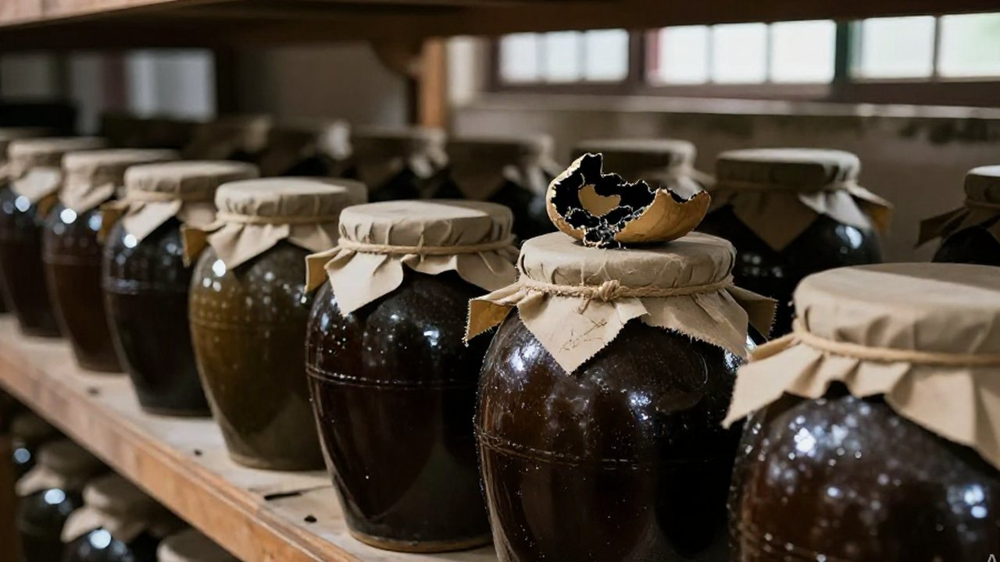
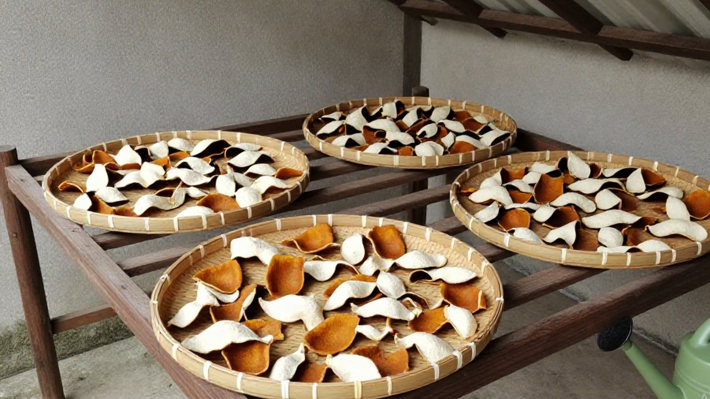

今晚滢滢姐跟你唠唠國際大事。
今天下午，滢滢姐在新會陳皮村南門牌坊 G04 的老宅院裡給陳皮翻曬。陽光灑在曬場上，金黃的陳皮片兒靜靜躺着，忽然手機「嗶嗶」響了——是吳小姐發來的新聞連結。
滢滢姐坐在藤椅上，把那張舊藤編椅子往旁邊一挪，騰出地方給你：咱們慢慢唠。
一、曬場上的藤椅：先說市場
今天美股又刷新高。標普 500 一度在 7651 點徘徊，轉眼竄到 7744 點上方；納斯達克更是一路飆，站到了 30824 點的高台。
滢滢姐拍了拍曬場邊的石墩：
「呢個邊係股市啊，分明係坐咗火箭！」
背後是 AI 芯片的狂歡——英偉達新出的 RTX Spark 超級芯片，聽說把個人電腦變成「AI 小超人」，1 petaflop 的算力擺在那兒，創作者、開發者、遊戲玩家都眼冒金星。台積電股價一路飆到 453 美元，比 ChatGPT 剛出來時漲了 689%。滢滢姐嘖嘖嘴：
「呢個邊係股票，係會長翅膀嘅陳皮啊！」
二、油市添柴：像咱們曬場的水位

油市卻在這歡騰裡添了把柴。布倫特原油穩在 102 至 104 美元一桶，西德州中質原油在 90 美元左右。為啥呢？得看霍爾木茲海峽——今天油輪通行量又跌到兩個月低點，油輪得繞路走。
滢滢姐用曬皮的木鏟指指遠方：
「你睇，呢個油價就好似咱們曬場嘅水位——漲嘅時候大家都緊張，跌嘅時候又怕乾旱。」
不過她很快又笑了：「好在據報道，特朗普昨天和普京聊了，說俄羅斯願意馬上供應三十萬噸柴油給全球市場，還有五十萬噸跟着，以後還能加到一百萬噸——這下油價可能能喘口氣？」
三、就在此時：扎波羅熱的炸彈聲

可就在此時，烏克蘭南部扎波羅熱州又傳來炸彈聲。早上五點左右，俄羅斯的制導炸彈擊中了一棟五層住宅樓，樓角直接塌陷。據烏方通報，至少四人死亡、十一人受傷，救援人員從瓦礫下救出過生還者。
滢滢姐看着新聞裡那個被塵土籠罩的街區，聲音輕了下來：「就在特朗普和普京談話的幾小時後。」她沒再說話，只是把手中的陳皮片兒輕輕放回曬場，好像那是一份沉甸甸的心事。
四、科技圈：AMD 跨過萬億，高通也來了

科技圈更是熱鬧。除了英偉達的超級芯片，AMD 悄悄跨過了萬億市值門檻，成為第四個達成這一里程碑的美國芯片公司；高通也宣布要推出新 AI 芯片，來挑戰英偉達和 AMD。
滢滢姐忽然坐直了身子，眼睛亮晶晶的：
「你話呢啲 AI 芯片，係咪好似咱們陳皮村嘅曬場？越曬越值錢，但得睇天吃飯。」
她又補了一句：
「不過咱們陳皮唔靠天吃飯——靠嘅係十二年如一日嘅功夫。」
五、今天不只有好消息
巴拿馬早上剛遭遇了兩場強震，7.7 級和 6.6 級接連來襲，大教堂正面倒了，酒店牆面裂開；颶風登陸佛羅里達，阿拉巴馬那邊十幾萬人一度沒電；智利聖地亞哥的拉斯康德斯區因為暴雨泥石流被宣布為災難區。
黎巴嫩總統卻喜滋滋地宣布：特朗普終於撤銷了那條長達 41 年的美黎禁飛令——直飛華盛頓的航班又能起飛了。
滢滢姐站起來，把曬場邊的竹簍子往裡一推，陳皮片兒正整整齊齊地曬着。她拍了拍手上的灰：
「你睇，世界就好似呢個曬場——今日曬得好，聽日可能就要防雨；今日有烏雲，聽日說不定就金光燦爛。」
她忽然湊近了點，壓低聲音：
「不過你記住，無論外面幾亂，咱們陳皮村嘅曬場永遠喺度等你——下次你返嚟，我一定同你泡一杯最上頭嘅陳皮茶。」
常見問題
這篇的國際消息是真的嗎？本篇提到的市場與時事，來自二〇二六年十月十日前後公開報導，包括扎波羅熱住宅樓遇襲、巴拿馬強震、黎巴嫩四十一年的美國航班限制被撤銷等。傷亡數字以官方通報為準，隨救援進展可能更新。
滢滢姐為什麼要聊國際新聞？新會陳皮早就不是只賣給街坊的土產：海運、油價、匯率都會影響出口成本，芯片與 AI 也在改變種植、烘乾與倉儲的管理方式。聊新聞，其實是在看自家生意的天氣。
油價漲，跟陳皮有什麼關係？陳皮出口靠海運，船用燃油與運費直接跟着油價走；油價一漲，外銷的到岸成本就上去。這也是為什麼滢滢姐說油價像曬場的水位。
今年新會陳皮行情怎樣？今年是茶枝柑的小年，花量偏少、產量偏緊，好皮價格容易往上走。買皮的人建議認產區、看內囊、掃溯源碼，不要只看價格。
在家怎麼泡一杯「最上頭的陳皮茶」？取三克三年皮配五克白茶，九十度水快速洗皮十秒倒掉，之後低沖、前三泡十五至二十秒出湯；老皮（十年以上）改用小陶壺冷水下壺，大火燒開轉小火煮五分鐘。
陳皮要怎麼存放？通風、乾燥、清潔，用陶罐或紙箱置於陰涼處，頭幾年每年翻曬一至兩次；一發現回軟，立刻見太陽。潮濕是陳皮最大的敵人。
結語：曬場永遠在這兒
夜深了，曬場上的陳皮收進了倉，藤椅也搬回了屋簷下。世界很大，新聞很吵，但陳皮村的日子還是一天一天地過——今天翻皮，明天翻皮，三年之後，才有資格叫一聲「陳皮」。
滢滢姐說：「外面幾亂都好，你嚟到陳皮村，就有一杯茶。」
想知道今年小年對行情的影響，看這篇《小年風聲緊，曬場上父子吵了一架》；想弄清同一片產區裡為什麼某幾行果更貴，翻翻這篇《向陽那幾行為什麼貴五毛？》。
下期預告：滢滢姐要講講今年預售季的門道——同一批皮，為什麼早訂和晚訂差這麼多？下期接着唠。